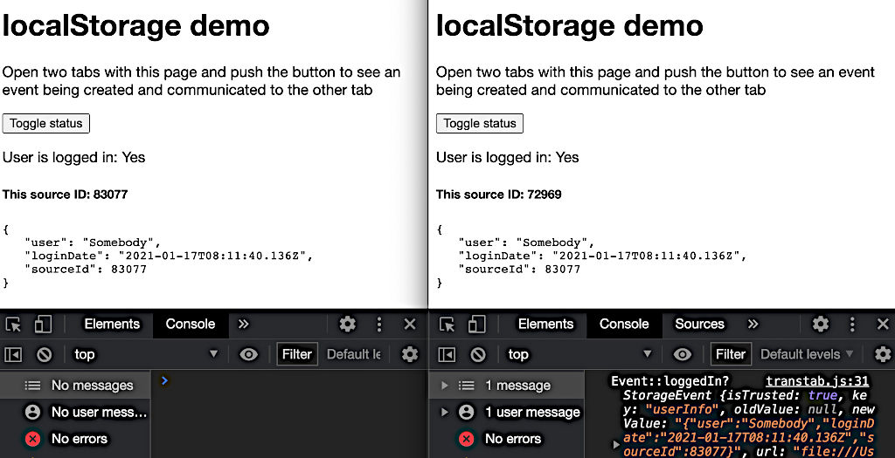
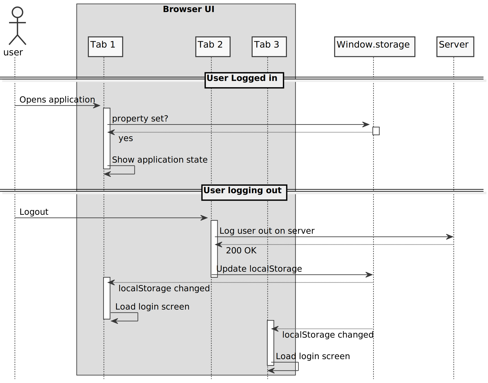

Communication between Browser tabs: Synchronizing State
Web applications requiring authentication can run in multiple browser tabs at the same time, thus requiring — for good UX — to synchronize global application state such as auth status, name changes, data updates etc.
In principle, I can think of three mechanisms that would accomplish this synchronization:
- Maintaining state on the server, implementing a polling mechanism to ask for updates
- Using web sockets to permit the server to push state changes to the browser
- A pure frontend solution, where state changes are communicated among tabs without involvement of a server.
In this post, I will describe a solution to the last approach, using localStorage to
communicate a change in authentication status among different tabs/instances of a
web application.
Features of localStorage
When storing, deleting or modifying data in localStorage, modern browsers emit
storage events.
The browser tab which updates localStorage
triggers the event, which is communicated to all other tabs in the same domain only —
meaning the triggering tab itself does not receive the event it emits, nor do tabs showing
content from different domains. The StorageEvent
is well-supported in all modern browsers,
with the exception Internet Explorer.
To receive that event, you can request to be notified using an event listener on the window object:
window.addEventListener('storage', this.onLocalStorageEvent.bind(this));The data passed to the event listener function contains, among many other properties,
the name of the localStorage key name that was modified plus the old and new content
being stored. Omitting many properties, the following listing shows the properties
of interest to this discussion:
StorageEvent {
...
currentTarget: Window
key: "userInfo"
newValue: "{"user":"Somebody","sourceId":49638}"
oldValue: null
storageArea: Storage {...}
type: "storage"
...
__proto__: StorageEvent
}This event object tells us that which property in localStorage has changed (key: "userInfo"),
its current value (newValue: "{...}") and that it previously was not set (oldValue: null).
The storageArea property “represents the Storage object that was affected”
StorageEvent detail documentation
As you can see in the object, the values for the current and previous state are provided as
strings and therefore need to be converted to a proper JavaScript object using JSON.parse().
The following screenshot shows the same application loaded into two windows demonstrating the functionality. It was taken after clicking on the “Toggle status” button in the left window, and shows:
- both windows displaying the same JSON object/state and
- the instance of the received event payload from the left window with the
sourceId83077 (the source ID is a random number created upon instantiation of this application — it is not a feature of the Storage mechanism and used here only for demonstration)

Implementation
With this basic browser functionality, we can take a look at the code. In principle, there are several tasks the code needs to accomplish:
- An initialization which attaches an event handler to the browser’s
storageevent, - a function invoked whenever a
storageevent occurs and - a function which updates the
localStorageproperty and thus triggers the event
the following listing shows the relevant parts of the implementation; You can find the full implementation on bitbucket:
const Fct = {
lsProperty: 'userInfo',
init() {
window.addEventListener('storage', this.onLocalStorageEvent.bind(this));
},
onLocalStorageEvent(authData) {
const isLoggedIn = !!(authData && authData.newValue);
this.updateUI(isLoggedIn);
},
triggerBtnClickEvent() {
const loggedIn = this.setNewState();
this.updateUI(loggedIn)
},
setNewState() {
const storedData = window.localStorage[this.lsProperty];
if (storedData) delete window.localStorage[this.lsProperty];
else {
const dataTostore = ...
window.localStorage[this.lsProperty] = JSON.stringify(dataToStore);
}
return !!window.localStorage[this.lsProperty];
},
...
}This simplified implementation achieves the following objectives:
- The
init()function sets up the event listener to call theonLocalStorageEvent()method and should be called after page load. onLocalStorageEvent()receives theStorageEventobject and determines whether the user is logged in based on whethernewValuecontains a JSON string and then updates the UI. IfnewValueisnull, the value has just been cleared, indicating a logout event.triggerBtnClickEvent()is a function that gets invoked whenever a user clicks on the button to change the login state; it invokes thesetNewState()method, which does the actual work of manipulatinglocalStorage.setNewState()determines whetherlocalStoragecurrently stores data for the key indicating the logged-in state and either removes or sets the entry. Either change will trigger aStorageEventin all other tabs on the same domain and will ultimately cause a change in their UIs via theupdateUI()method.
The code sample uses a method updateUI() which is where the update to the UI and browser
display happens in each tab. While this example implementation simply updates the UI with
new copy, a real implementation would take appropriate steps to react to a change in
login status. Possible options might be to load the login page or show a message on a
translucent overlay, which makes it impossible to further interact with the application.
The missing pieces pulling this implementation together, such as setting up the functionality happen (in this simple case) in the HTML:
...
<button onclick="Fct.triggerBtnClickEvent()">Toggle status</button>
...
</body>
<script type="application/javascript" src="transtab.js"></script>
<script>Fct.init();</script>Frameworks such as React.js or Angular provide lifecycle hooks which can be leveraged to set up this functionality as part of an application and should be used instead of this plain POC implementation.
The following sequence diagram visualizes the chain of events for three tabs, where a user logs out of the application on tab 2.

Summary and Discussion
As demonstrated in this post, the solution is a pure frontend solution which does not rely on communication with the server — the source of truth. Therefore, it is not impossible for the frontend to get out of sync with the backend if errors during the API call changing the authorization status are not properly handled on the frontend.
The safety implications are minimal, though, as even if the frontend shows a logged-in state, the server will reject any unauthenticated requests and prevent data manipulation or unauthenticated access to data — Developers can and should not rely on the frontend alone to implement secure web applications.
This solution’s main benefit is that it eliminates the need for repetitive polling of the server to retrieve login state. Considering the web traffic required for multiple tabs contacting the server every minute for potentially thousands of concurrent users adds up and can be avoided with this mechanism, which does not rely on requests to the server.
The process described here, and implemented in the
code on bitbucket, can be simplified
if the login system is accessible under a different URL, as can be the case in a
microservice architecture. In that case, the property in localStorage can be set in a
frame when being instantiated. On change of the login state
indicated through localStorage, a redirect to the login page then suffices to bring
the UI in sync with the application state.